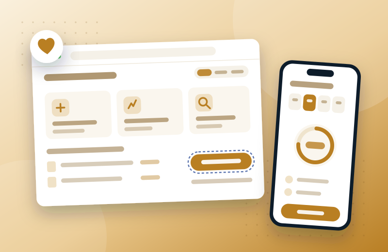

Novocure · Healthcare, via EPAM
Restarting an oncology HCP portal from zero — three markets, WCAG AA, +21% sales

The problem
A previous vendor had abandoned the build, leaving Novocure without a working way for HCPs and their staff to place orders, manage renewals, and coordinate patient device usage — while sales depended on that workflow being frictionless. The portal had to serve three markets with different personas, clinical practices, date formats, and legal constraints — not one design translated three ways. And given the treatment context, accessibility wasn't optional: every screen had to meet WCAG Level AA.
My role
Senior Experience Designer on the EPAM engagement; took over design leadership mid-project after the lead designer left — owning design processes, demos, stakeholder communication, and delivery alongside the design work itself.
The work — decisions that mattered
Three markets, three design problems
350+ requirements became 400+ prototype screens across the US, German, and French markets — treating each market's personas, medical-domain practices, and legal constraints as distinct design problems, not localization.
Accessibility from the first component
Contrast, focus order, semantic structure, and assistive-tech support were built into components from the start rather than retrofitted — so WCAG AA held even as requirements changed near-daily.
A design library as the single source of truth
One library across all three markets — the trade-off that made it possible to ship at volume, on deadline, while protecting consistency and future maintenance.
Also part of the work
- Built the IA and core task flows — orders, renewals, task management, team coordination — around how HCP staff actually work.
- Stepped into design leadership mid-project: set up missing processes, ran design demos, kept delivery on track through churn.
- Ran on-site stakeholder workshops in Lucerne with CH and DE stakeholders — driving same-day/next-day approvals and lifting team velocity by 30%.
Outcome
Delivered every MVP alpha and beta requirement on time. The redesign contributed to +21% sales in Q4 2024, and the portal scored 87/100 on the System Usability Scale — turning a stalled, vendor-abandoned project into a maintainable foundation across three markets.
UX/UI design · information architecture · WCAG AA accessibility · multi-market design · design systems/libraries · prototyping · stakeholder workshops · design leadership · Figma
Looking back
I'd formalize accessibility annotations into the design library from day one — we retrofitted documentation that should have been born with the components.
Let's talk
Open to senior product-design roles across Poland — hybrid or remote, B2B or employment contract.